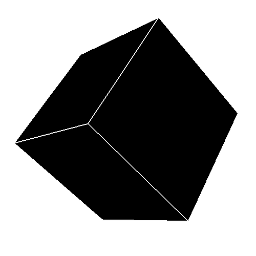

The rubik's cube is a 3d puzzle designed by Erno Rubik. Although it seems complex, in reality it's not that hard, you can solve it by just using four algorithms, but that's a pretty simple solution. Back in the 00' people created a version of the cube but in four dimension, so in fact it's not a cube anymore, but a tesseract, it's really hard even understand how this puzzle works, but just by practicing you should be able to solve it, as of today only a small part of the people have been able to solve, only 418. If you are interested, you should check mathologer's video on how to understand the puzzle, after that you can start trying to solve it using conmutators, check the video here.
The Rubik's cube is divided in the following elements:
A cube would look something like this:
But the Rubik's tesseract is divided in these:
And and a tesseract would look something like this:
In these cases is necessary to rotate them, otherwise you wouln't be able to understand the "fourth" dimension here, because you are actually looking at a 2d representation of a 3d representation of a 4d object. But the rotation makes it look "more" 3d than 2d, and exact representation in 2d would be this: